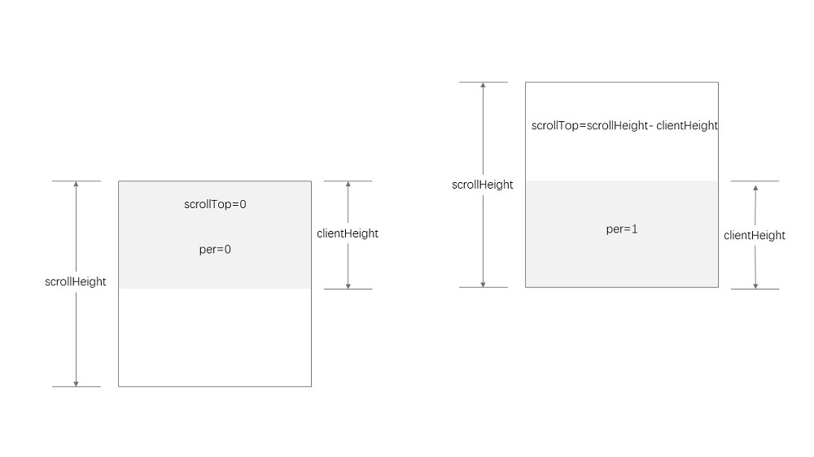

滚动行为 scroll-behavior
.容器/父元素行为
scroll-behavior: auto | smooth | initial | inherit;
.为 <html> 指定平滑滚动；其中，字体大小设置为62.5%，相当于是1rem = 10px，便于运算
html {
font-size: 62.5%;
scroll-behavior: smooth;
}
滚动停止 scroll-padding-top
.容器/父元素行为
.在滚动到某个元素时，该元素顶部与视口顶部之间的最小距离，特别适合锚点跳转，可以避免内容区被顶部的导航区遮盖
scroll-padding-top: length | percentage | auto;
html {
scroll-padding-top: 10vh;
}
滚动类型 scroll-snap-type
.容器/父元素行为
scroll-snap-type: [ axis ] [ snapStrictness ];
.通常为指定 html 为父元素
html {
scroll-snap-type: y mandatory;
}
对齐方式 scroll-snap-align
.子元素行为
.配合 scroll-snap-type 一起使用
.用于指定滚动容器内的滚动快照类型和行为。这个属性允许你控制滚动时元素如何“捕捉”到特定的位置，从而创建出平滑和有节奏的滚动体验
.页面滚动时，子元素在容器中的对齐方式
.常见于无限滚动、轮播图、多页布局等设计中
scroll-snap-align: none | start | end | center
.item {
scroll-snap-align: start;
}
[
.隐藏滚动条
.桌面端按住 Shift，使用中键滚动
.移动端左右滑动
定制滚动条 Custom Scrollbar
.通常指定特定元素，如 <body> 或某个容器元素；如果不指定，则所有元素共享一个样式
.可以使用：hover、box-shadow等属性
[
body::-webkit-scrollbar {
width: 8px;
}
body::-webkit-scrollbar-track {
background-color: #fff;
border-radius: 5px;
}
body::-webkit-scrollbar-thumb {
background-color: #444;
border-radius: 5px;
}
body::-webkit-scrollbar-thumb:hover {
background-color: var(--blue-light-color);
}
[
body::-webkit-scrollbar {
height: 4px;
}
.通常处理HTML页面的滚动，也可以处理某个特定元素的滚动
.通常处理垂直方向的应用

滚动区域
.没有滚动时，scrollTop为0，滚动比例为0
.滚动到最下面时，scrollTop为最大，滚动比例为1
.利用这个比值，可以做一些特别设计
获取文档对象 - 返回文档document的根元素root element；对HTML文档来说，就是<html>
let html = document.documentElement
获取文档视口高度 - 和浏览器有关，如缩放，调试时选择不同的设备等都可以影响视口大小
let clientHeight = html.clientHeight
获取文档可滚动高度 - el.scrollHeight：可以滚动的高度；通常获取body的可滚动高度
let scrollHeight = html.scrollHeight || document.body.scrollHeight
4. 获取文档滚动高度 - el.scrollTop：元素垂直滚动的数值：the number of pixels that an element's content is scrolled vertically.
let scrollTop = html.scrollTop || document.body.scrollTop
When scrollTop is used on the root element (the <html> element), the scrollY of the window is returned.
This is a special case of scrollTop
window.scrollY：是BOM中window对象的属性，滚动的距离；同scrollTop
可以根据这个动态设置元素样式，如视觉差、返回顶部；IE不支持
过程 Procedure
方案1：利用DOM元素：滚动事件添加在元素上
el.addEventListener('scroll', () => {
let per = el.scrollTop / (el.scrollHeight - el.clientHeight);
console.log(per);})
方案2：利用BOM元素：滚动事件添加在window上
window.addEventListener('scroll', fn);
window.addEventListener('resize', fn);
window.addEventListener('load', fn);
function fn() {
let top = document.documentElement.scrollTop | document.body.scrollTop;
console.log(top);
console.log(window.scrollY);
}
[视觉差
.将滚动值转化为元素的定位属性
window.addEventListener('scroll', () => {
let val = window.scrollY;
tree0.style.left = -val * 0.25 + 'px';
tree1.style.left = -val * 0.5 + 'px';
tree2.style.right = -val * 0.25 + 'px';
tree3.style.marginLeft = -val * 0.5 + 'px';
h1.style.marginTop = val + 'px';
})
[滚动显示
.将滚动值转化为元素的透明、缩放、位移等属性
let lis = document.querySelectorAll('li');
let html = document.documentElement;
document.addEventListener('scroll', () => {
let per = html.scrollTop / (html.scrollHeight - html.clientHeight);
let total = 1 / lis.length;
for (let [index, li] of lis.entries()) {
let start = total * index;
let end = total * (index + 1);
let pro = (per - start) / (end - start);
if (pro >= 1) pro = 1;
if (pro <= 0) pro = 0;
li.style.setProperty('--per', pro);
}
})
[使用须知 notice 、使用须知 notice - CodePen
.阅读完才可以继续下一步
let tips = document.querySelector('.tips');
let btn = document.querySelector('.btn');
tips.addEventListener('scroll', () => {
let per = tips.scrollTop / (tips.scrollHeight - tips.offsetHeight);
if (per >= 0.9) {
btn.removeAttribute('disabled');
btn.classList.add('active');
}
})
[水平进度条 -
CodePen
.水平方向的应用
[
[
.页面滚动时，高亮当前导航项
.当前思路对结构有要求